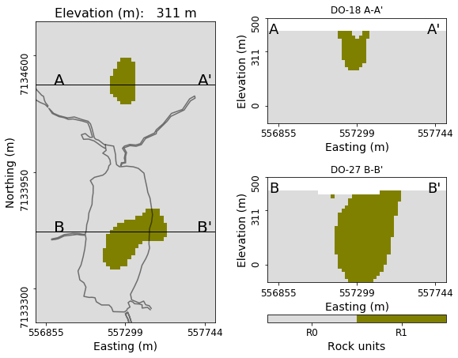

Interpretation
In this section, we build a petrophysical model of the deposit based on the inverted physical properties: density, susceptibility, conductivity and chargeability parameters. We compare our model built from unconstrained inversion to our initial conceptual model of TKC.
Density
Fig. 385 Petrophysical density model.
Using a cut-off value of -0.24 g/cc, we generate an initial rock model for the TKC complex based on the gravity gradiometry inversion (shown in Fig. 385). This result shows that the DO-27 pipe extends further to the south than was originally modeled using the magnetic data alone.
The density contrast, whether obtained from the surface gravity survey or the airborne gradiometry survey, could have immediately showed that the initial drilling was on the edge of the pipe instead of sampling its core and may have prevented the initial size misinterpretation of the southern pipe.
Susceptibility
Fig. 386 Petrophysic al density and susceptibility model.
The density contrast model only provides information about the spatial extents of the kimberlite pipes but it does not reveal information about the different types of kimberlitic rocks within DO-18 and DO-27. We further differentiate the kimberlitic rocks based on susceptibility. We chose to divide susceptible rocks in ranges of high and moderate values:
Moderate (\(0.002 \leq \kappa \leq 0.006\) SI)
High \(\kappa > 0.006\) SI
The model is shown in Fig. 386. We begin to identify two distinct regions near DO-27, with the largest susceptibilities located outside the density anomaly. The moderate susceptibilities appear in both DO-27 and DO-18.
Conductivity
Fig. 387 Density, susceptibility and conductivity petrophysical model.
From the density and magnetic susceptibility, kimberlite rocks are easily differentiated from the background rocks. Low to moderate susceptibility was recovered over both DO-18 and in the southern part of DO-27. From a potential field standpoint, the rocks making up the core region of both pipes are indistinguishable. The lack of depth resolution in potential fields also makes difficult to distinguish the vertical limits of the pipes.
In Fig. 387, we overlay the anomalous conductivity (\(\sigma > 10^{-3}\) S/m). which correlates well with the density lows. Conductivity helps in defining a clear interface at 20 to 40 m depth over DO-27, while DO-18 outcrops at the surface. The added information from conductivity also highlights the contrast between regions of high and moderate susceptibility.
Chargeability
Fig. 388 Density, susceptibility, conductivity and chargeability petrophysical model.
We have so far combined information from density, susceptibility and conductivity which helped in delineating the two pipes. However, based on these physical properties, it is not possible to distinguish between DO-27 and DO-18.
In Fig. 388, we overlay values of chargeability:
Early pseudo-chargeability \(\eta_E\) (55 \(s^{-1}\))
Late pseudo-chargeability \(\eta_L\) (8 \(s^{-1}\))
These two additional properties allows to create a strong distinction between DO-27 and DO-18. On top of that recovered Cole-Cole time constant (\(\tau\)) around cells \(\eta_{E}\) and \(\eta_{L}\) anomalies (red and green regions, respectively) were correspondingly small and large as shown in Fig. 384 (see A1-A3 vs. A4). And these different time constants may suggest size of grains at two anomalies are different.
Petrophysical Model
|

|
From the union of the regions defined by the thresholded physical property values, we build a final rock model. Important to note that only airborne geophysical data were used to build this model. We identify 5 rock units which are compared to our initial Conceptual model of TKC
R0 indicates the granitic host rock.
R1-R5 are related to kimberlites with low density
R2 corresponds to HK from the highest susceptibility
R3-R5 commonly have moderate susceptibility and conductivity hence they could be either PK or VK
R4 and R5 and only differentiated based on chargeability.
The table summarizes our interpretation about the petrophysical model.
Rock Unit |
\(\rho\) |
\(\kappa\) |
\(\sigma\) |
\(\eta_E\) |
\(\eta_L\) |
\(\tau\) |
Interpretation |
R0 |
Mod. |
Low |
Low |
Low |
Low |
N/A |
Host Rock |
R1 |
Low |
Low |
Low |
Low |
Low |
N/A |
Kimberlite |
R2 |
Low |
Mod. |
Mod. |
Low |
Low |
N/A |
PK o r VK |
R3 |
Low |
High |
Low |
Low |
Low |
N/A |
HK |
R4 |
Low |
Mod. |
Mod. |
High |
Low |
Small |
VK |
R5 |
Low |
Mod. |
Mod. |
Low |
High |
Large |
PK |
Geological validation
Following its discovery, over 150 drill holes have been completed at TKC, which we can use to validate our results. Fig. 389 compares sections of our final petrophysical model (100 m below the surface) to the geology based upon drilling results. The agreement is quite good, particularly regarding the geometric confinement of the pipes.
For the DO-27 pipe, interpretation of R3, R4, and R5 as respectively HK, VK, and PK, agrees with the ground truth.
The deeper part of the PK unit, which corresponds to R2 and R5, was not well distinguished in our interpretation due to the lack of depth sensitivity of the airborne geophysics.
The HK unit agrees well with R3 on plan map, but not as well on the B-B’ section. This discrepancy between R3 and HK at depth may be caused by low resolving power of our smooth inversion for recovering the geometry of thin dipping sheets (HK).
Our interpretation that the DO-18 pipe is VK, is reasonable. XVK is a sub-unit of VK and petrophysically similar as identified through drilling.
Overall, our analysis has clearly demonstrated the impact of using 3D IP information in an interpretation.
Fig. 389 Map of the geologic unit interpretation.
Fig. 390 Cross section of the geologic unit interpretation.